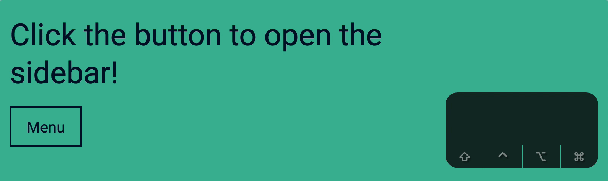
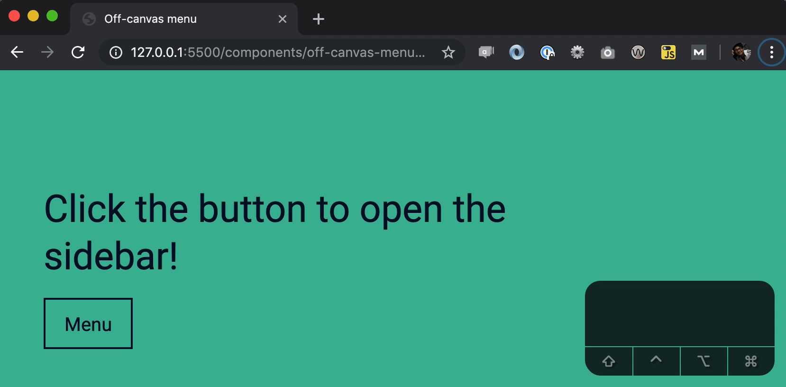
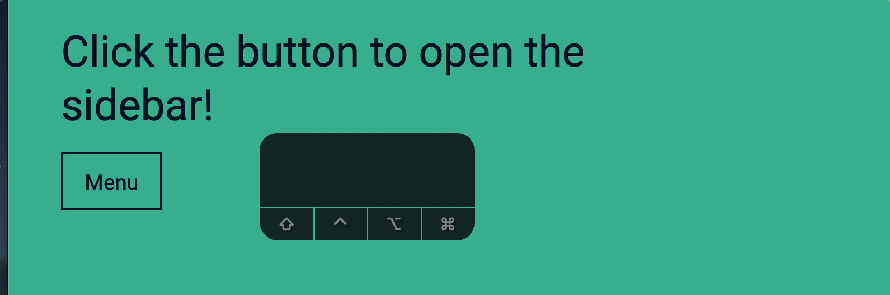

Before you do anything, add this code to normalize the differences between browser clicks on buttons elements.
document.addEventListener('click', event => {
if (event.target.matches('button')) {
event.target.focus()
}
})
Opening the off-canvas menu
You don’t have to write any extra code to open the menu. You can open it already.
To open the menu, hit Tab until you focus on the button. Then, hit Space or Enter to open the menu. This works because both Space and Enter trigger a click event on a button.

Directing focus to the menu
When a user opens the off-canvas menu with a keyboard, they expect to Tab to focus on a menu item.
Right now, if you press Tab after opening the menu, focus does not go into the menu. Instead, it goes to the first Tab you opened in the browser if you’re using Chrome. (If you use Safari, focus goes to the browser’s back button)
This happens because <button> is the last focusable element on the page. If there was another focusable element after <button>, Tab would focus that element instead.

We want to direct focus to the off-canvas menu so users can Tab into a menu item.
To do this, we add tabindex="-1" to the menu. This makes the menu focusable with JavaScript.
Now, we can direct focus to the menu when it opens.
const menu = document.querySelector('.nav')
button.addEventListener('click', event => {
body.classList.toggle('offsite-is-open')
if (body.classList.contains('offsite-is-open')) {
menu.focus()
}
})
Here’s how to read the code:
If <body> contains offsite-is-open class, we remove the class. Otherwise, we add the class.
After we add or remove the offsite-is-open class, we check whether <body> contains offsite-is-open again. If <body> contains the class, we focus on menu.
This can be confusing because we changed the DOM with classList.toggle. We can make the code straightforward by NOT using classList.toggle.
There’s a blue focus ring around .nav because we focused on .nav. But we should not show the blue focus ring because users cannot interact with .nav. We need to hide the blue focus ring.
To do so, we set outline to none. I’m going to add this code to the reset.css file for all components going forward.
[tabindex="-1"] {
outline: none !important;
}
Now, if you open the off-canvas menu, you won’t see the blue focus ring. When you hit Tab, you focus on the first menu item.
Closing the off-canvas menu
You can close the menu if you navigate to the <button> and hit Space or Enter.
But this is too tedious. Nobody would Tab to the <button> element to close the off-canvas menu. We want to provide a way for users to close the menu easily.
One way is to let users close the menu by pressing the Escape key. We can do this by listening to a keydown event.
When we close the off-canvas menu, we want to return focus back to <button>. This allows users to continue navigating to the rest of the page with Tab.
// In the click event
button.addEventListener('click', event => {
isOffcanvasMenuOpen()
? closeOffcanvasMenu()
: openOffcanvasMenu()
})
// In the keydown event
document.addEventListener('keydown', event => {
if (isOffcanvasMenuOpen() && event.key === 'Escape') {
closeOffcanvasMenu()
}
})
Prevent Tab access for hidden elements
Try hitting Tab right after you refresh the page. You will be able to Tab into items inside the off-canvas menu, even when the off-canvas menu is closed.
This is a mistake many developers make with their menu.

If users cannot interact with an element, they should not be able to focus on it. To prevent users from interacting with inaccessible elements, we can set visibility to hidden.
When we show the off-canvas menu, we need to set visibility back to visible.